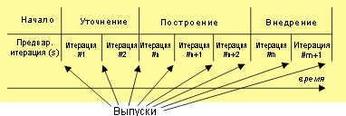

| Концепция: Этап |
 |
|
Что такое этап?Хотя общая цель проекта заключается в создании продукта, в ходе реализации проекта тактические задачи коллектива разработчиков постоянно меняются. На начальном этапе зачастую меняются требования к продукту. Кроме того, не всегда сразу понятно, реализуем ли проект в принципе, даже если он, предположительно, будет прибыльным. В это время очень важно получить ответы на данные вопросы, поскольку начинать разработку без них практически бессмысленно. Ближе к концу проекта, когда сам продукт обычно уже готов, становятся важными такие аспекты, как качество, полнота и готовность к выпуску. Задачи выполняются новыми способами. У продуктов работы появится новое наполнение. Чтобы учесть эти важные факторы при определении процесса выпуска в UMA рекомендуется разделить процесс на последовательность этапов. Для каждого этапа создаются собственные задачи и стиль итераций, и в большинстве случаев на разных этапах вносятся разные изменения в задачи и продукты работы. Итерации и этапыЛюбой этап можно представить в виде последовательности итераций. Итерацией называется полный цикл разработки, в результате которого создается выпуск (внешний или внутренний) исполняемой системы (обычно - компонента конечного продукта), который постепенно приобретает полноту и переходит в состояние выпускаемого продукта. На следующей диаграмме приведен пример разбиения проекта на этапы и итерации.  Пример этапов и итераций в RUP Выпуски, соответствующие концу этапа (основные выпуски), более важны, чем выпуски других итераций (промежуточные выпуски). |
© Copyright IBM Corp. 1987, 2005 Все права защищены |